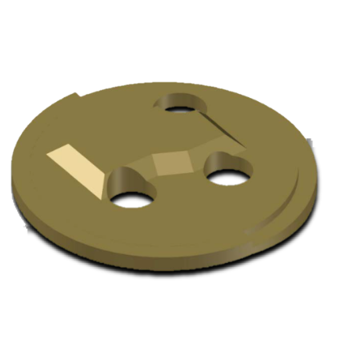
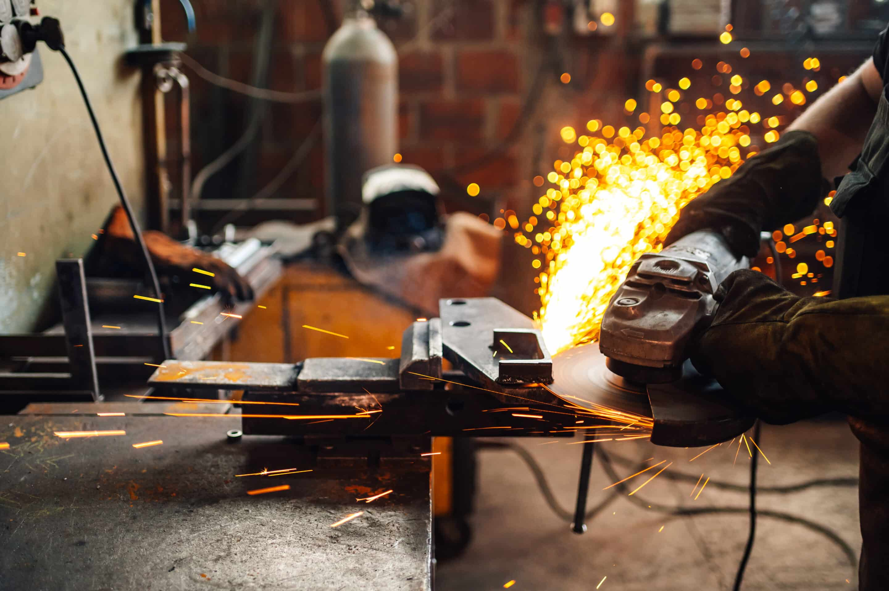

Durability-Focused Design
Our ladle products are designed to perform reliably in environments where wear resistance, consistency, and product longevity are critical.
Contact Us Today
(440) 386-4580
U.S. Refractory Products provides ladle-related refractory solutions designed to support durability, dependable performance, and long-term value in demanding steel production environments.

Our ladle solutions are developed to help customers improve product life, support operational consistency, and reduce maintenance-related issues in high-demand industrial applications.
We focus on practical performance, dependable material quality, and product solutions that create long-term value for production operations.
Our ladle products are designed to perform reliably in environments where wear resistance, consistency, and product longevity are critical.
We develop solutions that help reduce interruptions, improve product performance, and support more stable operation over time.
We work with customers to help identify the right ladle-related solution for their process requirements and operating goals.
Our ladle product line is built to support practical industrial needs. We focus on providing dependable refractory solutions that help customers improve performance while controlling long-term operating cost.
By combining product understanding with responsive service, U.S. Refractory Products helps customers choose solutions that fit their real production environment.

Contact our team to learn more about our ladle-related refractory solutions and find the right option for your operation.